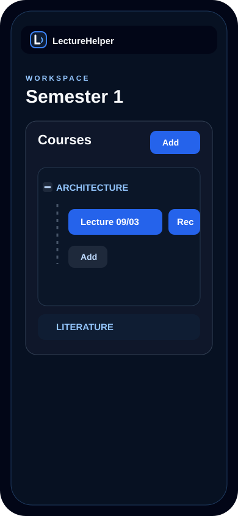
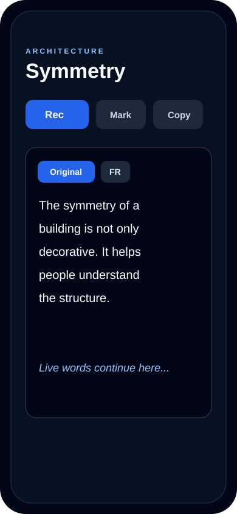
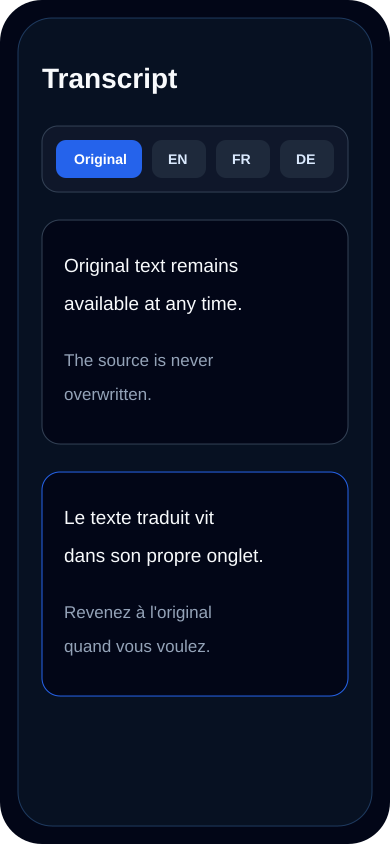
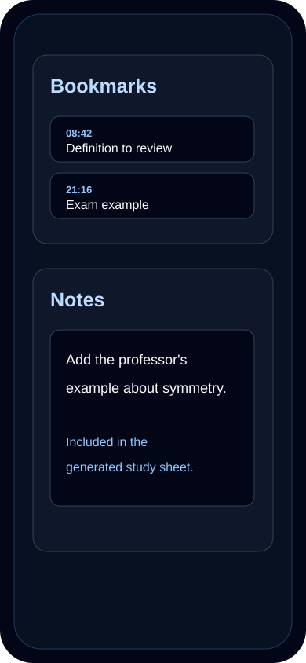
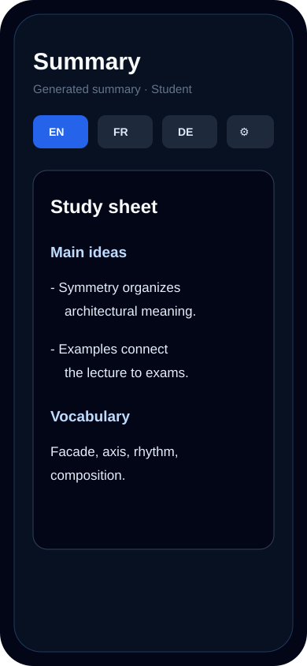
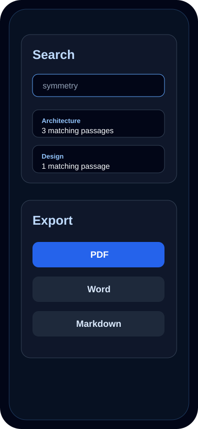

Organization
Organisation
Workspaces, courses and lectures.
Workspaces, cours et séances.
Students can separate semesters, subjects and recordings without mixing everything in a single transcript list.
L'étudiant peut séparer années, matières et enregistrements sans tout mélanger dans une seule liste de transcriptions.
- One active workspace at a time.
- Un workspace actif à la fois.
- Courses can be folded to keep the screen readable.
- Les cours peuvent être repliés pour garder un écran lisible.
- Each lecture has its own recording button.
- Chaque séance dispose de son propre bouton d'enregistrement.

Live transcript
Transcription
Follow the speaker during long classes.
Suivre l'orateur pendant les cours longs.
The transcript appears during recording and remains editable afterwards for corrections or inline notes.
La transcription apparaît pendant l'enregistrement et reste éditable ensuite pour corriger ou ajouter des notes inline.
- Designed for long sessions.
- Pensé pour les longues séances.
- Foldable transcript area for fast navigation.
- Zone de transcription repliable pour naviguer plus vite.
- Text size can be adjusted.
- La taille du texte peut être ajustée.

Translations
Traductions
Switch languages without losing the original.
Changer de langue sans perdre l'original.
Translations behave like tabs: the source transcript remains available while translated versions are generated on demand.
Les traductions fonctionnent comme des onglets : la transcription source reste disponible pendant que les versions traduites sont générées à la demande.
- Original, English, French, Japanese and German tabs.
- Onglets original, anglais, français, japonais et allemand.
- Copy each language independently.
- Copie indépendante pour chaque langue.
- Useful for multilingual lectures.
- Utile pour les cours multilingues.

Notes and bookmarks
Notes et marque-pages
Keep personal context close to the transcript.
Garder le contexte personnel près de la transcription.
Notes and bookmarks help students mark definitions, examples and moments to review later.
Notes et marque-pages permettent de repérer définitions, exemples et moments à revoir.
- Bookmark important moments while recording.
- Marquer les moments importants pendant l'enregistrement.
- Use personal notes in generated summaries.
- Utiliser les notes personnelles dans les fiches générées.
- Fold sections to save space on mobile.
- Replier les sections pour gagner de la place sur mobile.

AI study sheets
Fiches IA
Turn a lecture into a structured study sheet.
Transformer un cours en fiche-résumé structurée.
LectureHelper can generate summaries in several languages with student, business, meeting, research or custom profiles.
LectureHelper peut générer des fiches en plusieurs langues avec des profils étudiant, business, réunion, recherche ou personnalisés.
- Markdown-style structure, displayed as formatted content.
- Structure type Markdown, affichée sous forme formatée.
- Editable summary after generation.
- Fiche éditable après génération.
- Copy or export for revision.
- Copie ou export pour révision.

Search and export
Recherche et export
Find material again and take it elsewhere.
Retrouver l'information et l'emporter ailleurs.
Search across the current workspace and export transcripts, notes and summaries as formatted files.
Recherchez dans le workspace actif et exportez transcriptions, notes et fiches dans des fichiers formatés.
- Keyword search across lectures.
- Recherche par mots-clés dans les séances.
- Formatted PDF, Word and Markdown export.
- Export formaté en PDF, Word et Markdown.
- Designed for revision and sharing.
- Pensé pour réviser et partager.
